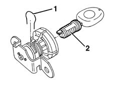
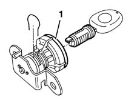

7015B34 lock block - r+r with handle or support removed
- Path
- Procedures > 70 FITTINGS > 7015 TAILGATE/FLAP > 7015B TAILGATE LOCKING/OPENING DEVICES > 7015B34 lock block - r+r with handle or support removed
- Kind
- repair procedure (removal / refitting; the operation number is the code)
- Applies to
- all engines; all production periods
- Interactive page
- https://sloeber94.github.io/elrnDB-fMltpl/en/#/2892122
Applies to: all engines; all production periods
Applies to: all engines; all production periods
 Removing
Removing
 Refitting
Refitting1. Remove the retaining clip.
2. Insert the key in the lock barrel and remove.

Applies to: all engines; all production periods
Refitting
RemovingCheck that the lock barrel is undamaged.
1. Check that the seal is undamaged.

Applies to: all engines; all production periods
Fit the retaining clip into its seat.
Fit the lock barrel into its seat until the groove engages with the retaining clips.